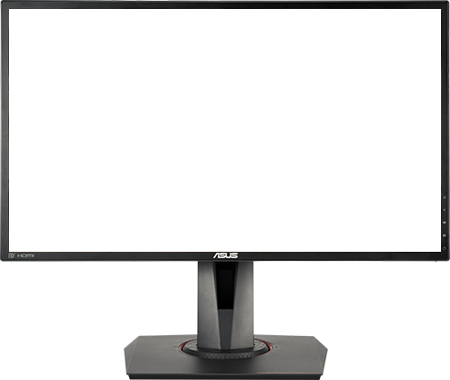

Monitores
Una ventana que conécta dos mundos
Los monitores son las ventanas que conectan nuestro mundo con el informático, son la ventana que nos deja ver y usar nuestros ordenadores.
Nos permiten usar y desarrollar Software, una herramienta indispensable en nuestros escritórios para el día a día.
Aquí aprenderéis un poco más de este periférico tan esencial y a la vez tan desconocido.

Qué es, qué hace y para qué sirve.
¿Qué es un monitor?
El monitor es un periférico de salida, que a veces si es una pantalla táctil tambíen es de entrada/salida.
¿Qué hace un monitor?
El monitor controla la iluminación de los píxeles de la pantalla según se lo ordene el ordenador, los actualiza en tasas de refresco horizontales y verticales.
¿Para qué sirve un monitor?
El monitor nos permite visualizar la interfaz del ordenador mediante la GPU que manda las órdenes al monitor para controlar cada píxel.